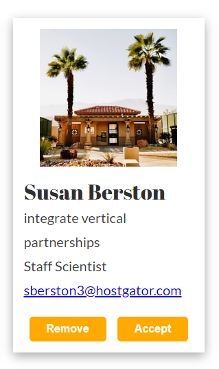

Solution
SolutionGithub repository
Fonts
I decided to get an inspiration from Figma's font pairing. I knew that I wanted to use Lato as a font for bodytext, so I checked out this link and decided to use a display font, Abril Fatface as my second one. I applied it to all headers (h1, h2 and h3), but for UI elements I decided to stick with Lato to keep readability.
To keep balance in font sizing, I used Type Scale. I kept 16px as my base size and chose Major Third as a scale.
UI Cards
I decided to add sunny yellow to the design as an accent but also as a call-to-action. Since the rest of the website is kept in greyscale, using some color made the website a bit more interesting. I used grid to layout the cards on the website and flex to layout content of each card. Instead of using borders, I applied a shadow to each card to make them more visible and well structured.
